Как работать с оконными функциями в Google BigQuery — подробное руководство

Количество данных стремительно растет. Растет и интерес к сервисам для их хранения и обработки. Один из сравнительно новых и качественных инструментов в области хранения и обработки больших массивов информации — облачная база данных Google BigQuery. Инструмент способен обрабатывать сотни тысяч строк в секунду. Если верить открытым источникам, среди множества инструментов, направленных на обработку Big Data, Google BigQuery предпочитают «М. Видео», «Юлмарт», «Связной», Ozon.Travel, «Эльдорадо», Onlinetours, Anywayanyday и «Вымпелком».
В работе BigQuery является более простым инструментом, чем MySQL и PostgreSQL, да и большинство других. Все потому, что в инструменте отсутствует часть работы, связанная с администрированием сервера. Оптимизацией работы базы занимается непосредственно Google. Второй приятный бонус — вам не придется тратиться на дорогостоящие сервера, так как вся информация в данном случае хранится и обрабатывается на серверах Google. Относительный минус — учебного материала по работе с BigQuery очень мало. На русском языке его практически нет. Я решил исправить сей обидный факт, поэтому знакомлю вас с некоторыми возможностями этой базы данных. Для дальнейшей работы вам необходимо скачать csv файл, который мы сейчас загрузим в BigQuery.
Загрузка данных в Google BigQuery из CSV файла
Научимся загружать данные в BigQuery. Этот навык пригодится для отработки на практике всех примеров запросов, описанных далее в статье. 1. Выбираем проект, в который нам необходимо загрузить таблицу. Жмем на кнопку меню напротив названия проекта и выбираем пункт «Create new dataset».
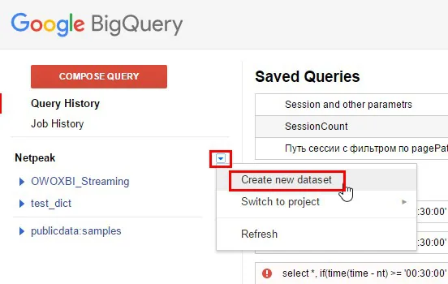
- Задаем имя набора данных и жмем «OK».
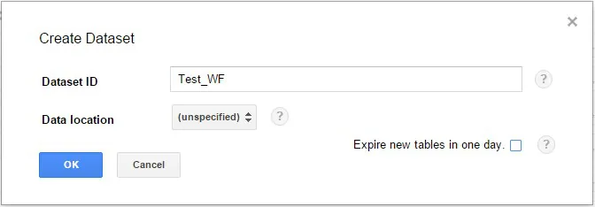
- Далее в созданном наборе данных жмем «+».
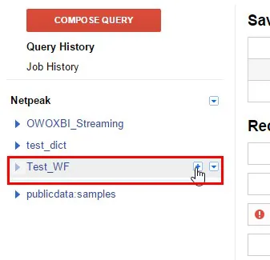
- На вкладке «Choose destination» задаем имя таблицы и жмем «Next» в нижней части диалогового окна.
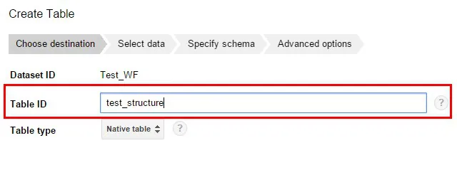
- На вкладке «Select data» жмем кнопку «Choose file».
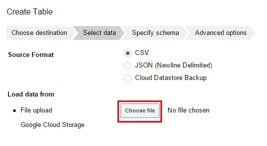
- Выбираем скачанный ранее файл и жмем «Next».
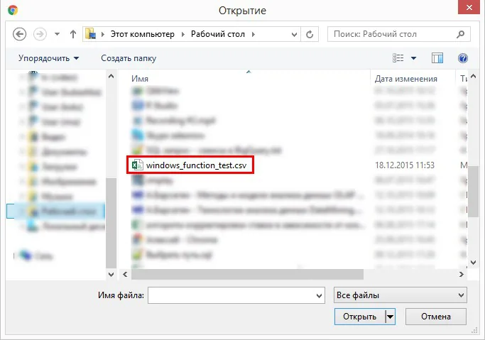
- На вкладке «Specify schema» описываем структуру таблицы, добавляя поля нажатием кнопки «Add fields».
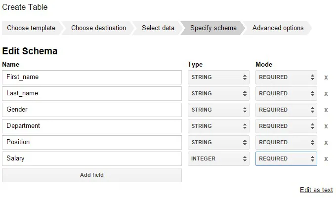
- На вкладке «Advanced options» мы должны задать разделитель полей. В нашем случае это точка с запятой. Устанавливаем переключатель «Field delimiter» в положение «Other» и в текстовом поле прописываем «;». Также можем задать другие настройки. Например, в нашем исходном файле первая строка содержит заголовки, которые нам не надо загружать в таблицу. Поэтому в текстовом поле настройки «Header rows to skip» указываем 1 и жмем «Submit».
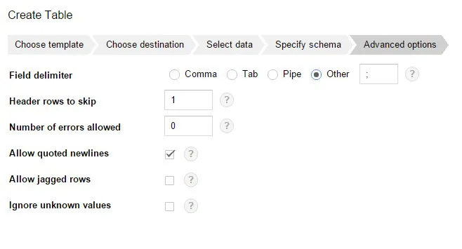
- После этого будет запущен процесс загрузки данных в созданную таблицу.
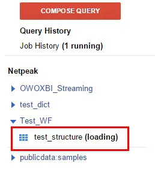
- Жмем кнопку «Compose query».
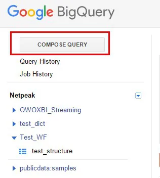
Теперь вы можете писать свой первый запрос, к только что загруженным данным:
select *
from Test_WF.test_structure
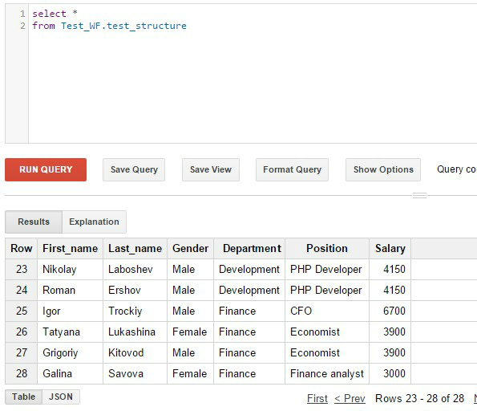
Оконные функции в Google BigQuery
Оконные функции являются, пожалуй, самыми полезными в BigQuery. По сути, их действие схоже с агрегирующими функциями. Разница заключается в том, что при использовании агрегирующих функций необходимо группировать результат по полям, к которым агрегирующие функции не применяются. А оконные функции выполняют подобные вычисления без группировки, возвращая агрегированный нужным вам способом результат для каждой строки. Таким образом, этот тип функций не меняет выборку, а лишь добавляет в нее необходимую информацию. Давайте разберемся, что в данном случае подразумевается под окном.
Окно — это некое выражение, описывающее разделение всей таблицы на отдельные наборы строк, а также описывающее сортировку строк в этих наборах.
Схематически работу оконной функции можно показать следующим образом. Возьмем функцию SUM (Salary) OVER (PARTITION BY Development), запущенную на загруженных ранее тестовых данных. Результат:
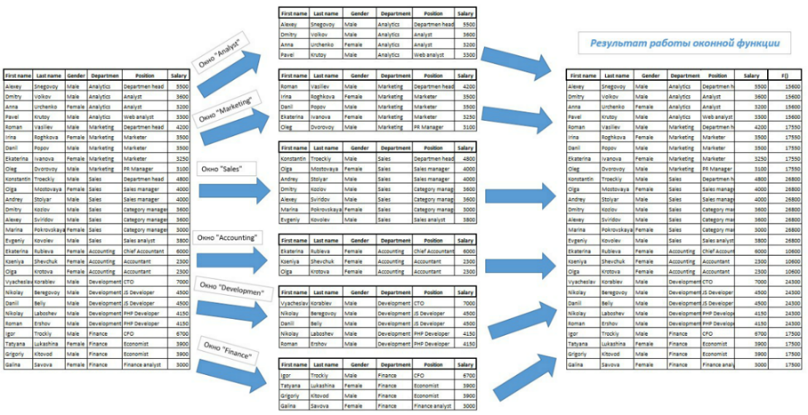
Синтаксис всех оконных функций, существующих в Google BigQuery, требует обязательный пункт OVER. Данный пункт дает возможность описать три дополнительных параметра для разделения данных таблицы на окна.
- Partition позволяет указать признак формирования окна, то есть признак, по которому вы будете разделять данные для агрегирования.
- Order позволит вам задать сортировку внутри окна.
- Window Frameдает возможность устанавливать смещение строк внутри окна по различным признакам, например, по времени.
Синтаксис оконных функций выглядит так:
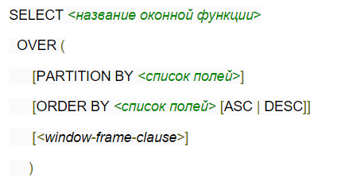
Рассмотрим отдельные блоки и их предназначение.
1. PARTITION BY
Определяет, по какому принципу будет разделен массив данных на окна. Вам необходимо прописать перечень полей, по которым вы хотите разделить таблицу, к которой обращается запрос. При использовании оконных функций вы не можете группировать данные с помощью GROUP BY в том же подзапросе, в котором применяется оконная функция. Если вам необходимо сгруппировать полученный результат, используйте GROUP BY в подзапросе, который находится на уровень выше. Более подробно об этом я расскажу немного позже.
2. ORDER BY
ORDER BY позволяет задавать сортировку внутри каждого созданного с помощью PARTITION BY окна.
3. WINDOW FRAME
С помощью этой необязательной опции вы можете задавать смещение внутри каждого окна. Например, вам нужно просуммировать текущую строку таблицы с двумя предыдущими. Синтаксис функции будет выглядеть так:
sum(Salary) over (ROWS BETWEEN 2 PRECEDING AND CURRENT ROW)
Синтаксис опции Window Frame можно описать отдельно, он выглядит следующим образом:
{ROWS | RANGE} {BETWEEN start AND end | start | end}
Описание Window Frame начинается с одного из ключевых слов, ROWS или RANGE.
3.1. ROWS
Используется, когда вам необходимо применить межстрочное вычисление. Например, просуммировать текущую строку таблицы с несколькими предыдущими. Для этого достаточно задать количество строк, которые необходимо агрегировать. Пример использования ROWS на наших тестовых данных:
sum(Salary) over (ROWS BETWEEN 2 PRECEDING AND CURRENT ROW)
3.2. RANGE
Дает возможность указать диапазон значений для вычислений. Например:
sum(Salary) over (order by Salary RANGE BETWEEN 1000 PRECEDING AND CURRENT ROW)
Формула просуммирует зарплаты сотрудников со всеми зарплатами, которые попадают в диапазон «на 1000 меньше», чем у сотрудника в текущей строке в рамках каждого окна. С выбранным ключевым словом ROW или RANGE, как вы уже могли заметить из примеров, необходимо задавать диапазон агрегирования по схеме:
BETWEEN start AND end
3.3. BETWEEN START AND END
Start описывает начальное смещение в рамках окна относительно текущей строки. Start принимает следующие значения:
{UNBOUNDED PRECEDING | CURRENT ROW | expr PRECEDING | expr FOLLOWING}
где:
- UNBOUNDED PRECEDING — первая строка текущего окна;
- CURRENT ROW — текущая строка;
- expr PRECEDING — определяет количество предыдущих, участвующих в расчетах строк. Вместо expr вы должны указать количество предыдущих участвующих в расчетах строк относительно текущей строки;
- expr FOLLOWING — определяет количество строк для агрегации из числа тех, что следуют за текущей строкой.
End описывает конечное значение диапазона смещения и принимает такие же значения, как и Start. Например:
{UNBOUNDED FOLLOWING | CURRENT ROW | expr PRECEDING | expr FOLLOWING}
UNBOUNDED FOLLOWING в данном случае используется для того, чтобы задать в качестве последней строки агрегации последнюю строку текущего окна. Пример описания Between Start and End в функции:
sum(Salary) over (ROWS BETWEEN 2 PRECEDING AND CURRENT ROW)
В данном случае Start — это «2 PRECEDING» а End — «CURRENT ROW». Эта функция говорит просуммировать в рамках текущего окна поля Salary две предыдущие строки и текущую. Поскольку пункт PARTITION BY не описан, текущим окном является вся таблица.
Главным отличием оконных функций от агрегирующих является то, что они не группируют результат, а указывают агрегированное значение для каждой отдельной строки. Данный функционал очень полезен для построения аналитических отчетов, расчета скользящего среднего и нарастающих итогов.
Например, результат следующего запроса выведет нарастающий итог по пяти строкам.
SELECT name, value, SUM(value) OVER (ORDER BY value) AS RunningTotal
FROM
(SELECT "a" AS name, 0 AS value),
(SELECT "b" AS name, 1 AS value),
(SELECT "c" AS name, 2 AS value),
(SELECT "d" AS name, 3 AS value),
(SELECT "e" AS name, 4 AS value);
Результат:
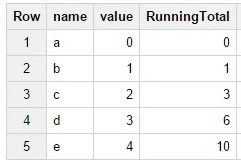
Чтобы посчитать нарастающий итог по зарплатам сотрудников на тестовых данных, загруженных нами ранее, запустим следующий запрос:
SELECT
CONCAT(First_name, " ", Last_name) as fullName,
Salary,
SUM(Salary) OVER (ORDER BY fullName) as runningTotal
FROM Test_WF.test_structure
Результат:
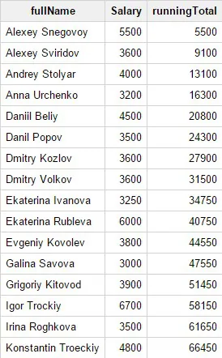
Поле «runningTotal» вернуло нарастающий итог по зарплатам.

Внимание: чтобы получить в результате нарастающий итог, описывайте пункт ORDER BY, иначе напротив каждой строки будет указываться сумма зарплат всех сотрудников.
Еще один пример использования функции sum как оконной, а не агрегирующей. Например, мы хотим узнать, какая часть фонда заработной платы в каждом отделе приходится на начальника. Запрос:
SELECT
Department,
Position,
round(Salary / departmentSalarySum * 100 , 2) as headSalaryPercent
FROM
(SELECT
Position,
Department,
Salary,
SUM(Salary) OVER (PARTITION BY Department) as departmentSalarySum
FROM Test_WF.test_structure)
WHERE
Position in('Department head','CTO','CFO','Cheif Accountant')
Результат:
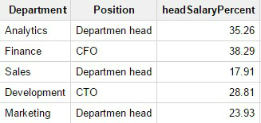
Если вы хотите производить какие-либо вычисления с результатами, которые возвращает оконная функция, их необходимо выносить в запрос на уровень выше, а сами вычисления производить в отдельном подзапросе.
SELECT
Position,
Department,
Salary,
SUM(Salary) OVER (PARTITION BY Department) as departmentSalarySum
FROM Test_WF.test_structure
Подзапрос возвращает следующий результат:
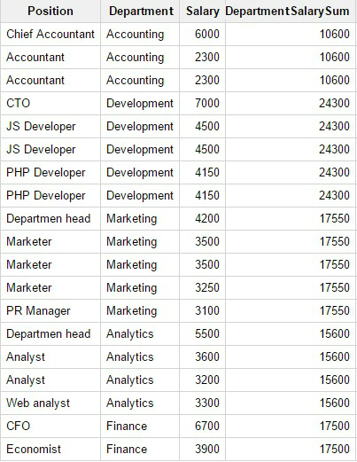
Далее мы уже работаем с данными, который вернул представленный выше подзапрос. Вычисляем процент зарплаты сотрудников от фонда зарплаты отдела:
SELECT
Department,
Position,
round(Salary / departmentSalarySum * 100 , 2) as headSalaryPercent
Потом остается только отфильтровать результат запроса, чтобы итоговая таблица содержала данные только по руководителям отделов.
WHERE
Position in('Department head','CTO','CFO','Cheif Accountant')
Рассмотрим все существующие на момент написания статьи оконные функции BigQuery.
1. Функции AVG(numeric_expr), COUNT(*), COUNT([DISTINCT] field), MAX(field), MIN(field), STDDEV(numeric_expr), SUM(field)
Список стандартных агрегирущих функций, доступных для использования в виде оконных функций. Их синтаксис при этом не меняется, только добавляется описание окна с помошью пункта OVER.
- AVG — среднее арифметическое;
- COUNT — количество значений;
- COUNT[Distinct] — количество уникальных значений;
- MAX — максимальное значение;
- MIN — минимальное значение;
- STDDEV — среднеквадратичное отклонение;
- SUM — сумма значений.
Пример запроса:
SELECT
Department,
AVG(Salary) OVER (PARTITION BY Department) as winAvg,
COUNT(Salary) OVER (PARTITION BY Department) as winCount,
COUNT(DISTINCT Position) OVER (PARTITION BY Department) as winCountDistinct,
MAX(Salary) OVER (PARTITION BY Department) as winMax,
MIN(Salary) OVER (PARTITION BY Department) as winMin,
STDDEV(Salary) OVER (PARTITION BY Department) as winStDev,
SUM(Salary) OVER (PARTITION BY Department) as winSum
FROM Test_WF.test_structure
Результат запроса:
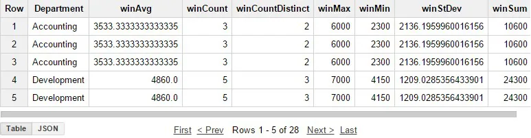
Данный запрос вернет все перечисленные в описании значения с разбивкой по отделам для каждой строки таблицы.
2. Функция CUME_DIST()
Возвращает кумулятивное распределение значения группе значений. Рассчитывается по формуле <количество предыдущих строк окна, включая текущую> / <общее количество строк окна>. Для данной функции описание ORDER BY в пункте OVER является обязательным. Пример запроса:
SELECT
Department,
Salary,
CUME_DIST(Salary) OVER (PARTITION BY Department ORDER BY Salary)
FROM Test_WF.test_structure
WHERE Department = 'Finance'
Результат запроса:
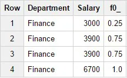
Часть результата запроса, касающаяся финансового отдела, является отдельным окном, так как мы указали PARTITION BY Department, и в качестве расчетного поля указали Salary. Также задали сортировку по полю Salary, рассчитали значения столбца f0_, который показывает значения, возвращенные функцией CUME_DIST. В финансовом отделе, как вы видите, четыре записи, из которых три уникальны по полю Salary (3000, 3900, 6700). В связи с этим значения были рассчитаны следующим образом:
- 1 / 4 = 0,25 (1 строка окна делится на общее количество строк в окне);
- 3 / 4 = 0,75 (количество предыдущих строк окна — это 1 + 2, так как значение второй строки окна (3900) встречается дважды. Делится на общее количество строк окна — 4.
- Расчет третьей строки полностью идентичен второй строке. Значение поля Salary в них одинаковое.
- 4 / 4 = 1 (количество предыдущих значений — 3 плюс 1, так как значение новой строки является уникальным и ранее учтено не было. Делится на общее количество значений данного окна.
3. Функция DENSE_RANK()
Возвращает ранг значения текущей строки относительно значений всего окна, исходя из заданной сортировки. Для данной функции описание сортировки в пункте OVER с помощью ORDER BY является обязательным. Пример запроса:
SELECT
Department,
Salary,
DENSE_RANK(Salary) OVER (PARTITION BY Department ORDER BY Salary)
FROM Test_WF.test_structure
WHERE Department in ('Finance','Sales')
Результат запроса:
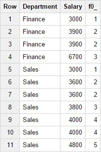
Как видим, результат запроса вернул ранг значения каждой строки относительно окна. В данном случае таблица состоит из двух окон Department = ‘Finance’ и Department = ‘Sales’.
4. Функция FIRST_VALUE(field_name)
Возвращает значение первой строки окна, согласно указанной сортировке. При этом для данной функции описание ORDER BY не является обязательным. Пример запроса:
SELECT
Department,
Salary,
FIRST_VALUE(Salary) OVER (PARTITION BY Department)
FROM Test_WF.test_structure
WHERE Department in ('Finance','Sales')
Результат запроса:
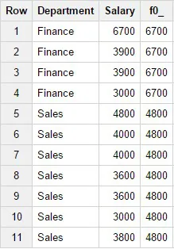
Функция вернула первое значение поля Salary для каждого окна. То, что это значение является самым большим, просто совпадение в данном случае. Так как мы не задавали сортировку, функция вернула просто значение из первой строки окна.
5. Функция LAG
Синтаксис:
LAG (field_name[, offset[, default_value]])
Возвращает значение строки по указанному полю, при этом поле смещено на указанное в функции количество строк до текущей строки. Если строка не найдена будет возвращено значение по умолчанию заданное в , значение по умолчанию обязательно должно иметь формат INT64, то есть указано с помощью функции INTEGER(expr). Пример запроса:
SELECT
Department,
Salary,
LAG(Salary, 2) OVER (PARTITION BY Department)
FROM Test_WF.test_structure
WHERE Department in ('Finance','Sales')
Результат запроса:
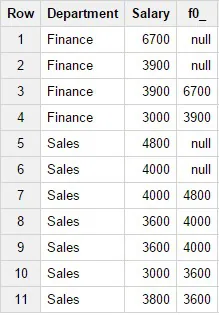
Функция LAG вернула значение со смещением на 2 строки вверх относительно текущей строки. Таким образом было возвращено значение 6700 в строку 3, полученное из поля Salary строки 1.
6. Функция LAST_VALUE(field_name)
По смыслу функция похожа на функцию FIRST_VALUE, но в данном случае функция возвращает значение из последней строки окна. Пример запроса:
SELECT
Department,
Salary,
LAST_VALUE(Salary) OVER (PARTITION BY Department)
FROM Test_WF.test_structure
WHERE Department in ('Finance','Sales')
Результат запроса:
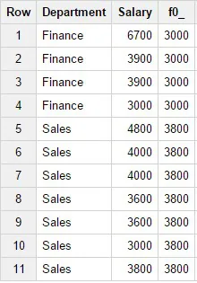
В строках 1-4 функция вернула значение 3000, так как это значение находится в последней строке окна ‘Finance’. В строках 5-11 мы получили значение 3800, так как оно находится в последней строке окна ‘Sales’.
7. Функция LEAD
Синтаксис:
(expr [, offset[, default_value]])
По смыслу похожа на функцию LAG, но возвращает значение со смещением на указанное количество строк в после текущей строки. Значение по умолчанию должно указываться в формате INT64, то есть быть завернуто в функцию INTEGER(), как показано в примере к данной функции. Пример запроса:
SELECT
Department,
Salary,
LEAD(Salary, 2, INTEGER(0)) OVER (PARTITION BY Department)
FROM Test_WF.test_structure
WHERE Department in ('Finance','Sales')
Результат запроса:
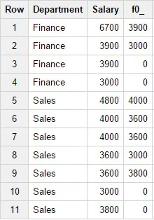
В первой строке функция вернула значение 3900, так как это значение получено из третьей строки, которая находится на указанное количество строк (2) дальше после текущей, первой строки. Аналогично во второй строке функция вернула значение 3000 из четвертой строки.
8. Функция NTH_VALUE(expr, n)
Возвращает значение из строки окна, соответствующей заданному индексу внутри этого окна. В случае, если окно содержит меньше строк, чем вы указали в качестве индекса, функция вернет null. Пример запроса:
SELECT
Department,
Salary,
NTH_VALUE(Salary, 2) OVER (PARTITION BY Department)
FROM Test_WF.test_structure
WHERE Department in ('Finance','Sales')
Результат запроса:
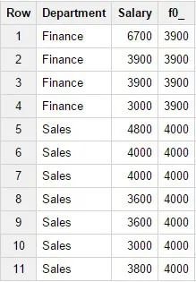
В строках 1-4 функция вернула значение 3900, так как в качестве индекса мы указали 2. Cоответственно, значение второй строки окна «Finance» содержит 3900. Аналогично для окна «Sales». Функция вернула 4000, так как вторая строка этого окна, или шестая строка нашей таблицы, содержит значение 4000.
9. Функция NTILE(num_buckets)
Делит окно на заданное в num_buckets количество одинаковых по количеству строк разделов и возвращает номер раздела окна для каждой строки. Пример запроса:
SELECT
Department,
Salary,
NTILE(4) OVER (PARTITION BY Department)
FROM Test_WF.test_structure
WHERE Department in ('Finance','Sales')
Результат запроса:
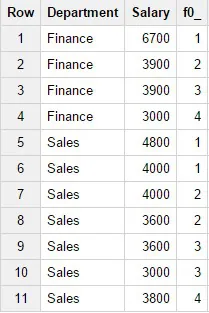
Поскольку в пункте OVER в опции PARTITION BY в качестве разделителя окон мы указали Department, функция разбила нашу таблицу на два окна (в фильтре WHERE мы указали два отдела «Finance» и «Sales»). Далее функция NTILE разбила каждое окно на указанное количество разделов. Мы указали четыре раздела. Первое окно «Finance» имеет всего четыре строки, соответственно, каждая строка окна является отделом, и каждой строке данного окна был присвоен свой номер раздела. Окно «Sales» содержит 7 строк. Если разбить 7 строк на 4 раздела, получится, что почти все разделы, кроме последнего, будут состоять из двух строк. Соответственно, строки 5 и 6 являются первым разделом окна Sales, 7-8 строка — вторым разделом, 9-10 строки — третьим разделом, и последний, четвертый раздел, содержит всего одну — 11 строку.
10. Функция PERCENT_RANK()
Возвращает ранг текущей строки относительно других строк раздела в процентом выражении. Возвращает значение от 0 до 1 включительно, первое значение окна всегда равно 0.0, последние 1.0. Для данной функции описание ORDER BY является обязательным. Пример запроса:
SELECT
Department,
Salary,
PERCENT_RANK(Salary) OVER (PARTITION BY Department ORDER BY Salary)
FROM Test_WF.test_structure
WHERE Department in ('Finance','Sales')
Результат запроса:
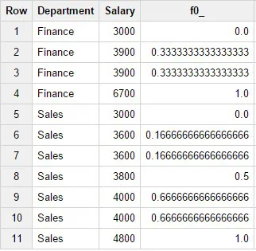
Каждая первая строка окна имеет нулевой индекс. Индекс каждой следующей строки увеличивается в случае, если значение поля, указанного в функции, уникально для количества предыдущих строк, в которых значения повторялись. Если значение повторяется, то и индекс для расчета также повторяется. Соответственно, последняя строка окна имеет индекс количества строк равный единице. Давайте более детально рассмотрим расчет для каждой строки окна «Sales». Общее количество строк в данном окне — 7, то есть индекс последней — это 7-1 = 6. Первая строка всегда имеет индекс 0. Расчет пятой строки, или первой строки окна «Sales», происходит по формуле:
Индекс текущей строки / индекс последней строки. В нашем случае 0/6 = 0.0.
Шестая строка содержит новое уникальное значение поля Salary. Индекс данной строки в этом случае рассчитывается так же, как индекс предыдущей, плюс один пункт, и равен единице. Следовательно, функция вернет значение по формуле:
индекс текущей строки / индекс последней строки. В нашем случае 1 / 6 = 0.16.
Поскольку значение в строке 7 повторяется, то и индекс для этой строки так же повторяется и будет равен 1. Соответственно, функция вернет значение 1 / 6 = 0.16. Восьмая строка вновь содержит уникальное значение. Её индекс должен быть увеличен относительно индекса прошлой строки на количество тех предыдущих строк, в которых значение повторялось. В нашем случае значение 3600 повторялось в двух предыдущих строках. Значит, индекс прошлой первой строки мы должны увеличить на 2 и получить индекс восьмой строки равный 3. Расчет значения будет 3 / 6 = 0.5. Девятая строка также содержит новое значение, 4000. Увеличиваем индекс на 1, так как значение прошлой строки не повторялось и содержится только в одной строке. Индекс текущей строки — 3 + 1 = 4, а значение, которое возвращает функция: 4 / 6 = 0.66. Десятая строка содержит такое же значение поля Salary, как и предыдущая. Соответственно, индекс остается 4 и значение поля рассчитывается так: 4 / 6 = 0.66. Одиннадцатая строка содержит новое значение, равное 4800, поскольку прошлое значение поля Salary повторялось. Дважды увеличиваем индекс на 2. 4 + 2 = 6. Значение поля, возвращаемое функцией PERCENT_RANK: 6 / 6 = 1.0
11. Функция PERCENTILE_CONT(percentile)
Возвращает значения, основанные на линейной интерполяции между значениями группы, после сортировки, описанной в пункте ORDER BY. Процентиль должен иметь значение в диапазоне от 0 до 1. Для данной функции описание пункта ORDER BY является обязательным. Пример запроса:
SELECT
Department,
Salary,
PERCENTILE_CONT(0.5) OVER (PARTITION BY Department ORDER BY Salary)
FROM Test_WF.test_structure
WHERE Department in ('Finance','Sales')
Результат запроса:
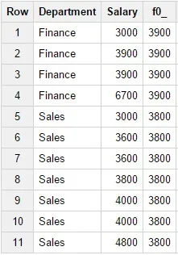
Поскольку мы в качестве процентиля указали 0,5, в нашем случае он будет равен медиане и возвращает значение медианы. Вы можете указать любой процентиль в интервале от 0 до 1. К примеру, значение 0,25 будет соответствовать второму квартилю, а значение 0,75 — третьему квартилю.
12. Функция PERCENTILE_DISC(percentile)
Возвращает значение с наименьшим кумулятивным распределением, большее или равное указанному в процентилю. Для данной функции описание пункта ORDER BY является обязательным. Пример запроса:
SELECT
Department,
Salary,
PERCENTILE_DISC(0.25) OVER (PARTITION BY Department ORDER BY Salary)
FROM Test_WF.test_structure
WHERE Department in ('Finance','Sales')
Результат запроса:
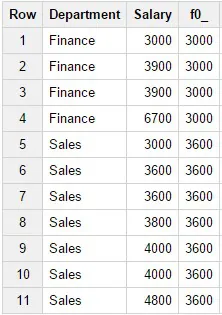
Функция возвращает значение, соответствующее указанному процентилю. Поскольку мы указали в качестве процентиля 0,25, функция вернула значение первого квартиля. Значение 0,5 вернет значение второго квартиля, который, в свою очередь, равен медиане. Значение 0,75 вернет значение третьего квартиля.
13. Функция RANK()
Возвращает ранг значения на основе сравнения с другими значениями в рамках окна. Равнозначные значения отображаются с одинаковым рангом. Ранг следующего значения увеличивается на количество значений, соответствующих прошлому рангу. Например, если два значения имеют ранг 2, то ранг следующего по величине значения будет 4.
Если вам необходимо получить непрерывное ранжирование, используйте функцию DENSE_RANK ().
Параметр ORDER BY в пункте OVER для данной функции является обязательным. Пример запроса:
SELECT
Department,
Salary,
RANK(Salary) OVER (PARTITION BY Department ORDER BY Salary)
FROM Test_WF.test_structure
WHERE Department in ('Finance','Sales')
Результат запроса:
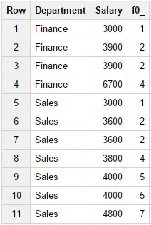
Как функция рассчитала ранг для окна «Finance»? Наименьшее значение находится в первой строке и равняется 3000, оно имеет первый ранг. Далее во второй и третьей строках идет равнозначное значение 3900. Обе строки имеют ранг 2. Так как ранг 2 повторялся дважды, то ранг следующего значения, находящегося в четвертой строке, увеличивается на 2 относительного ранга в строке 3 и равняется 4.
14. Функция RATIO_TO_REPORT()
Возвращает отношение текущего значения к сумме значений указанного поля в данном окне. Пример запроса:
SELECT
Department,
Salary,
RATIO_TO_REPORT(Salary) OVER (PARTITION BY Department ORDER BY Salary)
FROM Test_WF.test_structure
WHERE Department in ('Finance','Sales')
Результат запроса:
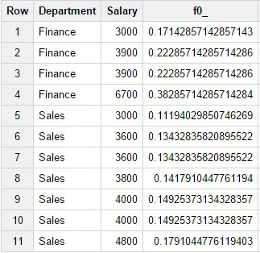
Для первой строки мы берем текущее значение, то есть 3000, и делим на сумму всех значений окна (3000+3900+3900+6700). Получаем 0,17, то есть значение первой строки составляет 17% от суммы значений всего окна «Finance».
15. Функция ROW_NUMBER()
Возвращает номер текущей строки в окне. Нумерация начинается с единицы. Пример запроса:
SELECT
Department,
Salary,
ROW_NUMBER() OVER (PARTITION BY Department)
FROM Test_WF.test_structure
WHERE Department in ('Finance','Sales')
Результат запроса:
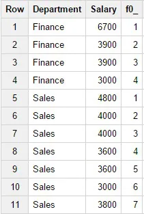
Работа данной функции достаточно проста. Функция просто возвращает номер строки в окне. На первый взгляд, оконные функции могут показаться сложными. Но, потратив немного времени и разобравшись с их немногочисленными настройками, описанными в этой статье, вы значительно расширите свои навыки работы с различными базами данных. Этот тип функций поддерживается не только в BigQuery. Большая часть описанных функций с сохранением описанного выше синтаксиса работает и в PostgreSQL, и в MS SQL, а также в других достаточно известных системах управления базами данных. Если остались вопросы, готов разъяснить в комментариях.